许多现实世界的问题都需要整合多种信息来源。有时这些问题涉及多种不同的信息模态——视觉、语言、音频等——就像理解电影中的场景或回答关于图像的问题时所需要的那样。在其他情况下，这些问题涉及同一类输入的多个来源，例如在总结多篇文档或以另一张图像的风格绘制一张图像时。
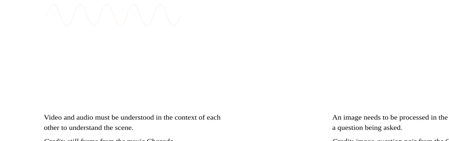
在处理这类问题时，通常有道理的是在另一种信息的背景下处理一种信息来源；例如，在上面的右图中，可以在问题的背景下从图像中提取含义。在机器学习中，我们经常将这种基于上下文的处理称为条件化（conditioning）：模型执行的计算会受到从辅助输入中提取的信息的条件化或调制。
寻找一种有效的方式来对信息来源进行条件化或融合是一个开放的研究问题，而在本文中，我们专注于我们称之为**特征级变换**（feature-wise transformations）的一类特定方法。我们将考察在许多神经网络架构中使用特征级变换来解决大量多样化的问题；我们认为它们的成功，源于其足够灵活，能够在各种环境中学习到条件化输入的有效表示。从多任务学习的角度来看，当条件化信号被视为任务描述时，特征级变换会学习一个任务表示，使其能够捕捉并利用多个信息来源之间的关系，即使在截然不同的问题设置中也是如此。
基于特征的变换
为了激发对特征级变换的理解，我们从一个基本例子开始，其中两个输入分别是图像和类别标签。在这个例子中，我们的目标是构建一个生成各种类别图像（小狗、船、飞机等）的生成模型。该模型以类别和随机噪声源（例如从正态分布中采样的向量）作为输入，并输出所请求类别的图像样本。
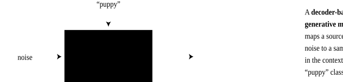
我们的第一反应可能是为每个类别构建一个独立的模型。对于少量类别来说，这种方法还算不错，但对于数千个类别，我们很快就会遇到扩展性问题，因为需要存储和训练的参数数量会随着类别数量的增加而增长。我们也错过了利用类别之间共性的机会；例如，不同类型的狗（小狗、梗犬、斑点狗等）共享视觉特征，并且在从抽象噪声向量映射到输出图像时，很可能共享计算。
现在假设除了各种类别之外，我们还需要对大小或颜色等属性进行建模。在这种情况下，我们不可能合理地期望为每种可能的条件化组合都训练一个独立的网络！让我们来考察几种简单的方案。
一个快速的解决办法是将条件化信息的表示拼接到噪声向量上，并将结果视为模型的输入。这种方案在参数上非常高效，因为我们只需要增加第一层权重矩阵的大小。然而，这种方法隐含了一个假设，即模型需要在输入处使用条件化信息。也许这个假设是正确的，也许不是；或许模型直到生成过程的后期才需要融入条件化信息（例如，在基于纹理进行条件化时，就在生成最终像素输出之前）。在这种情况下，我们将迫使模型在许多层中不加改变地携带这些信息。
由于这种操作成本很低，我们不妨避免做出任何此类假设，而是将条件化表示拼接到网络中所有层的输入上。我们将这种方法称为**基于拼接的条件化**（concatenation-based conditioning）。
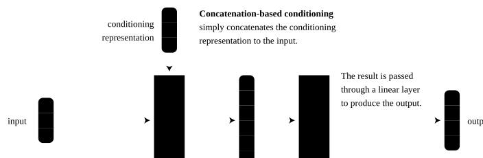
另一种将条件化信息高效集成到网络中的方法是通过**条件偏置**（conditional biasing），即根据条件化表示向隐藏层添加偏置。
有趣的是，条件偏置可以被视为实现基于拼接的条件化的另一种方式。考虑一个全连接线性层应用于输入 \mathbf{x} 和条件化表示 \mathbf{z} 的拼接结果： [1]
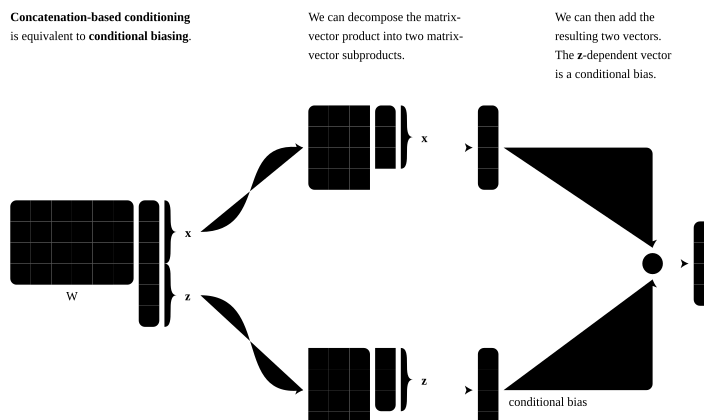
另一种将类别信息高效集成到网络中的方法是通过**条件缩放**（conditional scaling），即根据条件化表示对隐藏层进行缩放。
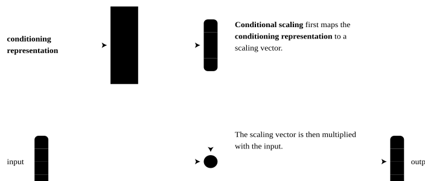
条件缩放的一个特殊实例是**特征级sigmoid门控**（feature-wise sigmoidal gating）：我们根据条件化表示将每个特征缩放到 0 到 1 之间的值（通过应用logistic函数强制实现）。直观上，这种门控允许条件化信息选择哪些特征被传递下去，哪些被置零。
鉴于加法和乘法交互似乎都很自然且直观，我们应该选择哪种方法呢？支持乘法交互的一个论点是，它们在学习输入之间的关系时非常有用，因为这些交互自然地识别“匹配”：将符号相同的元素相乘比将符号不同的元素相乘会得到更大的值。这就是为什么点积常被用来判断两个向量的相似程度。[2] 支持加法交互的一个论点是，它们对于不太强烈依赖两个输入联合值的应用更为自然，例如特征聚合或特征检测（即检查某个特征是否在两个输入中的任意一个中存在）。
本着对问题做出尽可能少假设的精神，我们不妨将两者结合起来，形成**条件仿射变换**（conditional affine transformation）。[3]
上面概述的所有方法都有一个共同特点，即它们在特征层面起作用；换句话说，它们利用了条件化表示与被条件化网络之间的基于特征的交互。当然可以使用更复杂的交互，但基于特征的交互通常在有效性和效率之间取得了愉快的折中：需要预测的缩放和/或偏移系数的数量随网络中特征数量线性增长。而且在实践中，特征级变换（通常在多个层中复合使用）往往具有足够的容量来在各种环境中对复杂现象进行建模。
最后，这些变换只强制施加了有限的归纳偏置，并且保持领域无关。这种特性可能是一个缺点，因为某些问题用更强的归纳偏置可能更容易解决。然而，正是这种特性也使得这些变换能够在问题领域中如此广泛地有效，正如我们稍后将回顾的那样。
命名法
为了继续关于特征级变换的讨论，我们需要抽象掉乘法和加法交互之间的区别。在不失一般性的前提下，让我们专注于特征级仿射变换，并采用Perez等人[[perez2018film]]的命名法，它将条件仿射变换形式化为缩写**FiLM**，即**Feature-wise Linear Modulation**（基于特征的线性调制）。[4]
我们说一个神经网络使用FiLM进行调制，或被**FiLM-ed**，是在其架构中插入FiLM层之后。这些层由某种形式的条件化信息参数化，而从条件化信息到FiLM参数（即偏移和缩放系数）的映射称为**FiLM生成器**。换句话说，FiLM生成器根据某个辅助输入来预测FiLM层的参数。请注意，FiLM参数是一个网络中的参数，但却是另一个网络的预测结果，因此它们不是传统意义上具有固定权重的可学习参数。为简单起见，你可以假设FiLM生成器输出网络架构所有FiLM参数的拼接结果。
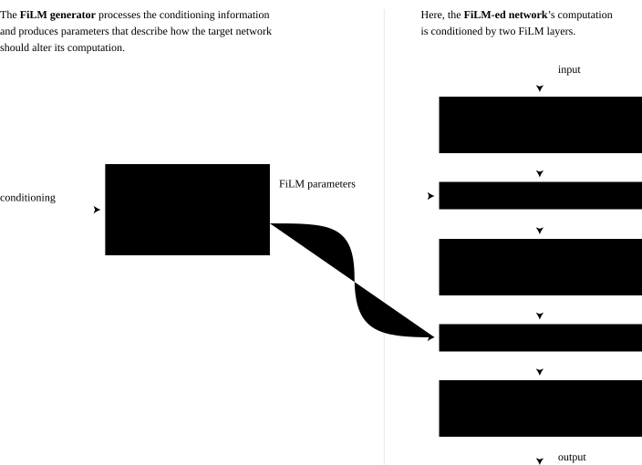
顾名思义，FiLM层对其输入应用基于特征的仿射变换。所谓基于特征，我们指的是缩放和偏移是逐元素应用的，或者在卷积网络的情况下，是逐特征图应用的。[5] 换句话说，假设 \mathbf{x} 是FiLM层的输入，\mathbf{z} 是条件化输入，而 \gamma 和 \beta 是依赖于 \mathbf{z} 的缩放和偏移向量，
你可以与以下全连接和卷积FiLM层进行交互，以直观感受它们允许的调制类型：
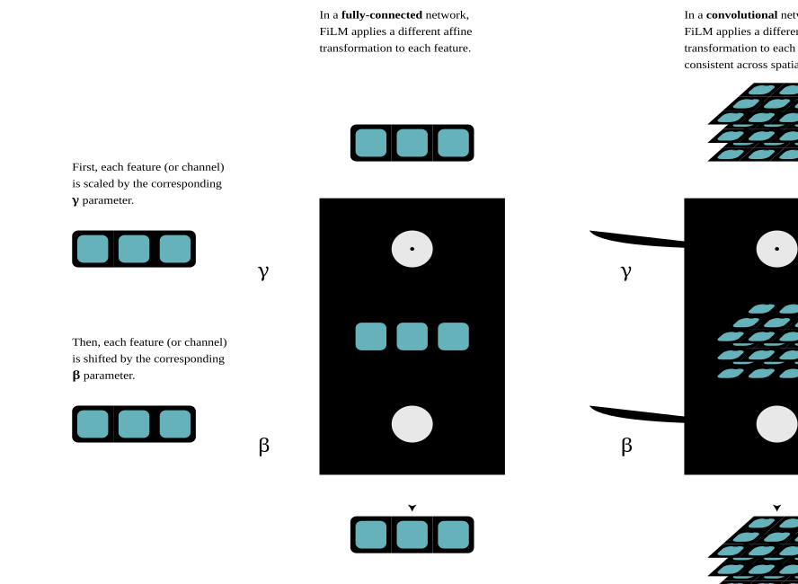
除了作为条件化特征级变换的一个良好抽象之外，FiLM命名法也很适合任务表示的概念。从多任务学习的角度来看，我们可以将条件化信号视为任务描述。更具体地说，我们可以将所有FiLM缩放和偏移系数的拼接结果视为既是对如何调制被条件化网络的指令，也是对当前任务的表示。我们将在后面探索并阐释这个想法。
文献中的特征级变换
特征级变换出现在许多问题设置的方法中，但由于其简单性，它们的有效性很少被突出强调，而往往被其他新颖的研究贡献所掩盖。下面是文献中特征级变换的一些 notable 示例，按应用领域分组。这些应用的多样性凸显了基于特征的交互在学习有效任务表示方面所具备的灵活、通用的能力。
全部展开
视觉问答
Perez等人[[perez2017learning,perez2018film]]使用FiLM层构建了一个在CLEVR数据集[[johnson2017clevr]]上训练的视觉推理模型，用于回答关于合成图像的多步组合问题。
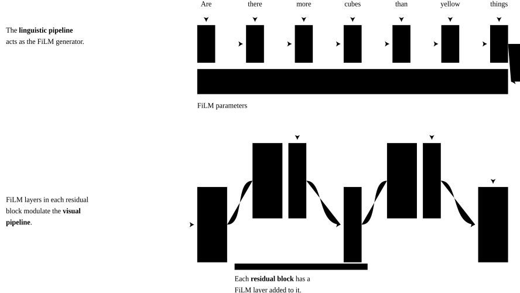
该模型的语言流水线是一个FiLM生成器，它提取问题表示并线性映射到FiLM参数值。使用这些值，在每个残差块中插入的FiLM层对视觉流水线进行条件化。该模型在图像-问题-答案三元组上进行端到端训练。Strub等人[[strub2018visual]]后来通过使用注意力机制在语言输入和逐层生成FiLM参数之间交替改进该模型。这种方法能够更好地扩展到具有更长输入序列的设置，例如对话，并在GuessWhat?! [[vries2017guesswhat]] 和 ReferIt [[kazemzadeh2014referitgame]] 数据集上进行了评估。
de Vries等人[[vries2017modulating]]利用FiLM来条件化一个预训练网络。他们模型的语言流水线通过条件批量归一化调制视觉流水线，这可以视为FiLM的一个特例。该模型学会在GuessWhat?! [[vries2017guesswhat]] 和 VQAv1 [[agrawal2015vqa]] 数据集上回答关于真实世界图像的自然语言问题。
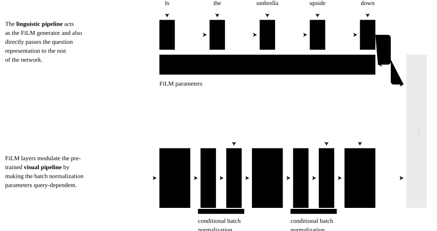
视觉流水线由一个在整个训练过程中固定的预训练残差网络组成。语言流水线通过扰动残差网络的批量归一化参数来操纵视觉流水线，这些参数在激活被归一化为零均值和单位方差后，对特征图进行重新缩放和重新偏移。如前所述，条件批量归一化可以视为FiLM的一个实例，其中后归一化的基于特征的仿射变换被FiLM层所取代。
风格迁移
Dumoulin等人[[dumoulin2017learned]]使用基于特征的仿射变换——以条件实例归一化层的形式——来根据所选风格图像对风格迁移网络进行条件化。与前一小节讨论的条件批量归一化类似，条件实例归一化可以视为FiLM的一个实例，其中FiLM层取代了后归一化的基于特征的仿射变换。对于风格迁移，该网络将每种风格建模为一组独立的实例归一化参数，并使用这些风格特定的参数进行归一化。
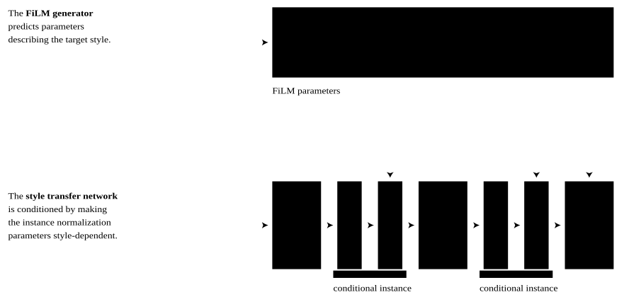
Dumoulin等人[[dumoulin2017learned]]使用简单的嵌入查找来生成实例归一化参数，而Ghiasi等人[[ghiasi2017exploring]]进一步引入了一个风格预测网络，该网络与风格迁移网络联合训练，以直接从给定的风格图像预测条件化参数。在本文中，我们选择使用FiLM命名法，因为它与归一化操作解耦，但Perez等人[[perez2018film]]使用的FiLM层本身受到Dumoulin等人[[dumoulin2017learned]]所用条件归一化层的极大启发。
Yang等人[[yang2018efficient]]为视频对象分割——即给定对象在第一帧的分割，在整个视频中分割该特定对象的任务——使用了一种相关架构。他们的模型使用基于特征的缩放因子，根据提供的第一帧分割对视频帧的图像分割网络进行条件化，同时使用基于位置的偏置根据前一帧进行条件化。
到目前为止，我们所涵盖的模型都有两个子网络：一个应用特征级变换的主要网络和一个输出这些变换参数的辅助网络。然而，被FiLM-ed的网络与FiLM生成器之间的这种区分并不是严格必要的。例如，Huang和Belongie[[huang2017arbitrary]]提出了一种替代的风格迁移网络，它使用自适应实例归一化层，通过简单的启发式方法计算归一化参数。
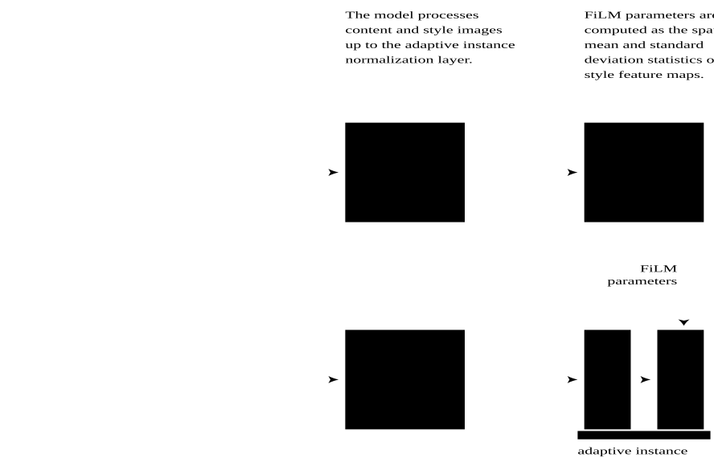
自适应实例归一化可以解释为在模型中间插入一个FiLM层。然而，它不是依赖辅助网络从风格图像预测FiLM参数，而是使用主网络本身来提取用于计算FiLM参数的风格特征。因此，该模型既可以视为被FiLM-ed的网络，也可以视为FiLM生成器。
图像识别
如前几小节所讨论的，没有什么能阻止我们将神经网络的激活本身视为条件化信息。这个想法产生了**自条件化模型**（self-conditioned models）。
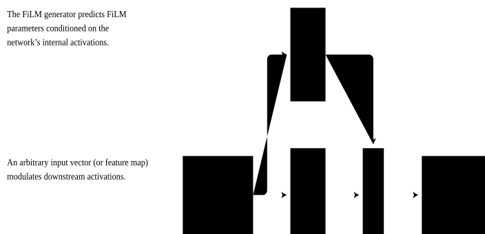
Highway Networks [[srivastava2015highway]] 是应用这种自条件化原则的典型例子。它们从LSTM[[hochreiter1997long]]在其输入门、遗忘门和输出门中大量使用特征级sigmoid门控来调节信息流的做法中获得灵感：
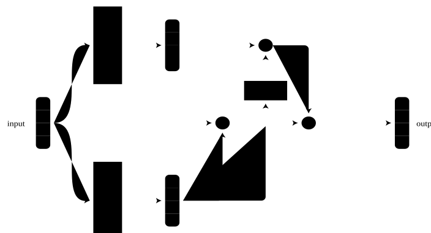
ImageNet 2017的获胜模型[[hu2017squeeze]]也以自条件化的方式使用了特征级sigmoid门控，作为根据自身“重新校准”一层激活的方法。
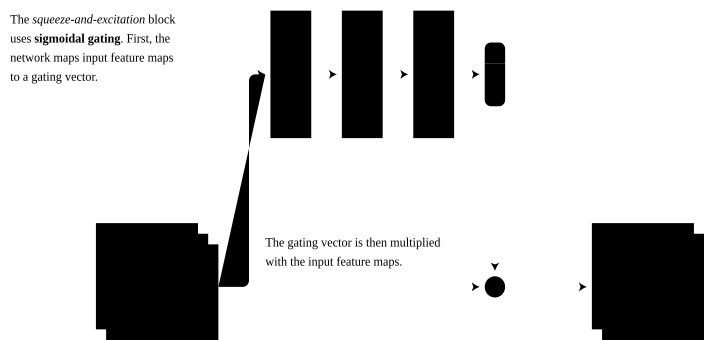
自然语言处理
对于统计语言建模（即预测句子中的下一个词），LSTM[[hochreiter1997long,melis2017lstm]]构成了一类流行的循环网络架构。LSTM大量依赖特征级sigmoid门控来控制信息进出记忆或上下文单元 \mathbf{c} 的流动，基于每个时间步 \mathbf{t} 的隐藏状态 \mathbf{h} 和输入 \mathbf{x}。
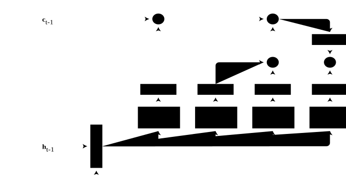
同样在语言建模领域，Dauphin等人[[dauphin2017language]]在他们提出的门控线性单元（gated linear unit）中使用sigmoid门控，该单元使用一半的输入特征对另一半应用特征级sigmoid门控。Gehring等人[[gehring2017convolutional]]采用了这一架构特性，引入了一种快速、可并行化的全卷积网络形式的机器翻译模型。
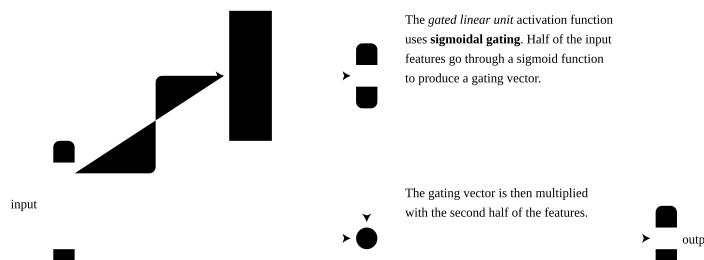
Gated-Attention Reader [[dhingra2017gated]] 使用特征级缩放，通过对文档阅读网络施加基于查询的条件化来从文本中提取信息。其架构由多个Gated-Attention模块组成，这些模块涉及文档表示token与通过对查询表示token进行软注意力提取的token特定查询表示之间的逐元素乘法。
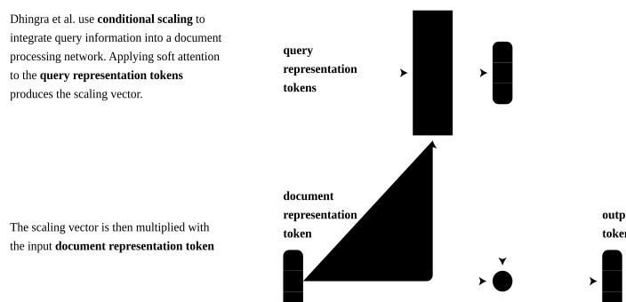
强化学习
Gated-Attention架构[[chaplot2017gated]] 使用特征级sigmoid门控来融合语言和视觉信息，该智能体在VizDoom [[kempa2016vizdoom]] 3D环境中接受训练，以遵循简单的“前往”语言指令。
Bahdanau等人[[bahdanau2018learning]] 使用FiLM层来条件化Neural Module Network[[andreas2016neural]]和基于LSTM[[hochreiter1997long]]的策略，在2D网格世界中遵循基本的组合语言指令（排列物体和前往特定位置）。他们以对抗方式使用来自另一个基于FiLM的网络的奖励来训练这个策略，该网络经过训练以区分已实现指令状态的真实示例和失败策略轨迹状态。
在指令跟随之外，Kirkpatrick等人[[kirkpatrick2017overcoming]] 还使用特定于游戏的缩放和偏置来条件化一个经过训练以玩10个不同Atari游戏的共享策略网络。
生成建模
DCGAN [[radford2016unsupervised]] 的条件变体是一种广受认可的生成对抗网络[[goodfellow2014generative]]架构，它使用基于拼接的条件化。类别标签被广播为特征图，然后拼接到判别器和生成器网络中卷积层和转置卷积层的输入上。
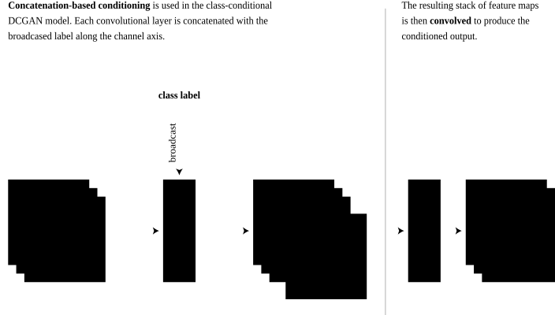
对于卷积层，基于拼接的条件化要求网络学习冗余的卷积参数来解释每个常量条件化特征图；因此，直接应用条件偏置在参数上更高效，但这两种方法在数学上仍然是等价的。
PixelCNN [[oord2016conditional]] 和 WaveNet [[oord2016wavenet]]——分别是图像和音频自回归生成建模的两个最新进展——使用条件偏置。PixelCNN中最简单的条件化形式是向所有卷积层输出添加基于特征的偏置。用FiLM的术语来说，这个操作等价于在每个卷积层之后插入FiLM层，并将缩放系数设置为常量1。[6]
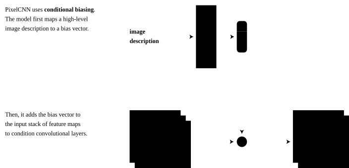
WaveNet描述了条件偏置允许外部信息根据条件化输入调制音频或语音生成过程的两种方式：
与PixelCNN一样，WaveNet中的条件化可以视为在每个卷积层之后插入FiLM层。主要区别在于FiLM生成网络的定义方式：全局条件化将FiLM生成网络表示为嵌入查找，并将其广播到整个时间序列，而局部条件化将其表示为从条件化信息输入序列到FiLM参数输出序列的映射。
语音识别
Kim等人[[kim2017dynamic]] 使用一种条件归一化形式来调制深度双向LSTM。如视觉问答和风格迁移小节中讨论的那样，条件归一化可以视为FiLM的一个实例，其中后归一化的基于特征的仿射变换被FiLM层所取代。
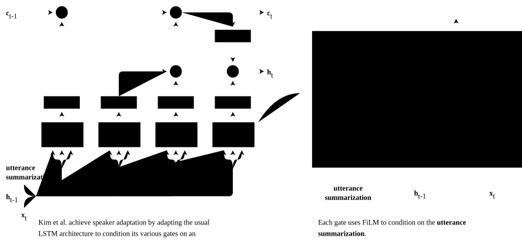
这里的关键区别在于，条件化信号不是来自外部来源，而是来自在每一层提取的用于适应模型的 utterance 摘要特征向量。
领域适配和少样本学习
对于领域适配，Li等人[[li2018adaptive]] 发现更新在某个领域上训练的网络的每通道批量归一化统计量（均值和方差），用该网络在新目标领域中的统计量来更新是有效的。如风格迁移小节中讨论的那样，这种操作类似于同时将网络用作FiLM生成器和被FiLM-ed的网络。值得注意的是，这种方法连同自适应实例归一化，具有不需要任何额外可训练参数的特别优势。
对于少样本学习，Oreshkin等人[[oreshkin2018tadam]] 探索了使用FiLM层来提供对少样本学习episode中输入分布变化的更强鲁棒性。给定episode的训练集用于生成FiLM参数，这些参数调制在Prototypical Networks [[snell2017prototypical]] 元训练过程中使用的特征提取器。
相关想法
除了直接使用特征级变换的方法之外，FiLM框架还更广泛地与以下方法和概念相关联。
全部展开
零样本学习
学习任务表示的想法与零样本学习方法有着强烈的联系。在零样本学习中，语义任务嵌入可以从外部信息中学习，然后用于对没有训练样本的类别进行预测。例如，为了泛化到图像分类中未见过的对象类别，可以从纯文本描述中构建语义任务嵌入，并利用对象的基于文本的关系来对未见过的图像类别进行预测。Frome等人[[frome2013devise]]、Socher等人[[socher2013zero]] 和 Norouzi等人[[norouzi2014zero]] 是这个想法的几个 notable 示例。
超网络
辅助网络预测主网络参数的概念也很好地由HyperNetworks [[ha2016hypernetworks]] 所例证，它预测整个层的权重（例如循环神经网络层）。从这个角度来看，FiLM生成器是一个专门的HyperNetwork，它预测被FiLM-ed网络的FiLM参数。两者之间的主要区别在于预测参数的数量和特异性：FiLM需要预测的参数远少于HyperNetworks，但调制潜力也较小。条件化机制的容量、正则化和计算复杂度之间的理想权衡仍然是一个正在进行的研究领域，许多提出的方法介于FiLM和HyperNetworks之间的谱系上（见参考文献注释）。
注意力
可以在注意力和FiLM之间找到一些相似之处，但两者以不同的方式运作，这一点很重要，需要加以区分。
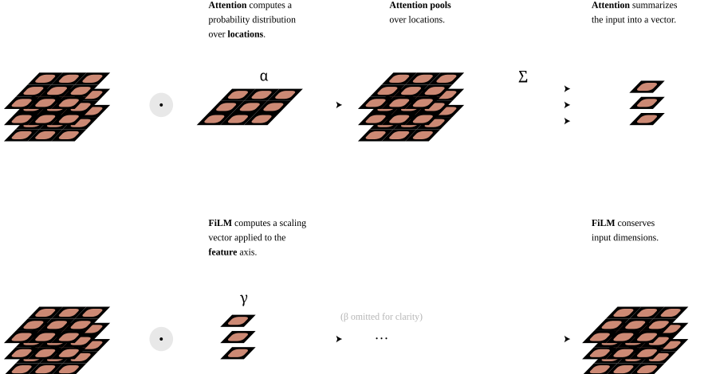
这种差异源于注意力和FiLM背后不同的直觉：前者假设特定的空间位置或时间步包含最有用的信息，而后者假设特定的特征或特征图包含最有用的信息。
双线性变换
稍加延伸，FiLM可以被视为具有低秩权重矩阵的双线性变换[[tenenbaum2000separating]]的特例。双线性变换定义了两个输入 \mathbf{x} 和 \mathbf{z} 与输出特征 y_k 之间的关系如下：k^{th}
请注意，对于每个输出特征 y_k 我们都有一个独立的矩阵 W_k，因此完整的权重集形成一个多维数组。
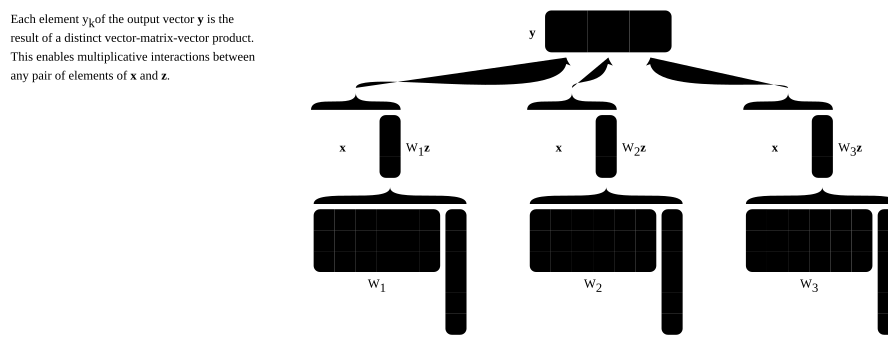
如果我们将 \mathbf{z} 视为缩放和偏移向量 \gamma 和 \beta 的拼接，并且如果我们用一个值为1的特征来扩充输入 \mathbf{x}，[7] 我们就可以通过将适当的权重矩阵条目置零来用双线性变换表示FiLM：
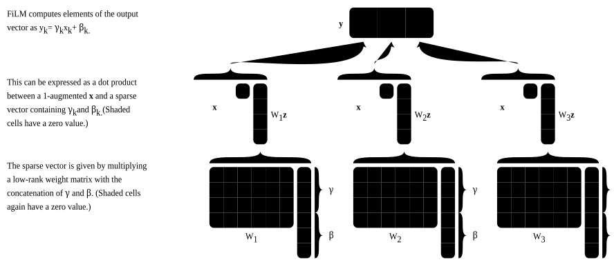
关于双线性变换的一些应用，请参见参考文献注释。
学习到的任务表示的性质
如前所述，在采用FiLM视角时，我们隐含地引入了任务表示的概念：每个任务——无论是关于图像的问题还是要模仿的绘画风格——通过FiLM生成器引发一组不同的FiLM参数，这可以理解为它如何调制被FiLM-ed网络的表示。为了更好地理解这种表示的性质，让我们关注两个在相当不同的问题设置中使用的FiLM-ed模型：
作为一个起点，我们能否辨别出FiLM参数作为任务描述函数的任何模式？可视化FiLM参数空间的一种方法是将 \gamma 对 \beta 作图，每个点对应一个特定的任务描述和一个特定的特征图。如果我们根据每个点所属的特征图对其进行颜色编码，我们会观察到以下结果：
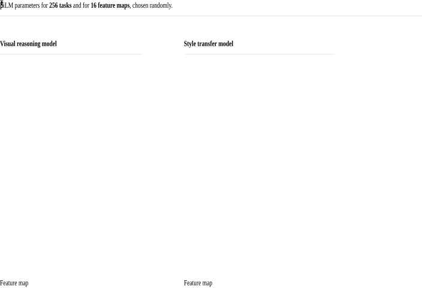
上面的图表使我们能够做出几个有趣的观察。首先，FiLM参数在参数空间中按特征图聚类，并且聚类位置在不同特征图之间并不均匀。这些聚类的方向在不同特征图之间也不均匀：主要变化轴可以是 \gamma 对齐的、\beta 对齐的，或者是以不同角度的对角线。这些发现表明，FiLM层中的仿射变换并不是以单一、一致的方式进行调制的，即只使用 \gamma、只使用 \beta，或者以某种特定方式同时使用 \gamma 和 \beta。也许这是因为仿射变换被过分指定了，或者这表明FiLM层可以用于以几种截然不同的方式执行调制操作。
尽管如此，这些参数聚类往往在一定程度上“稠密”的事实，可能有助于解释为什么Ghiasi等人[[ghiasi2017exploring]]的风格迁移模型能够进行风格插值：FiLM参数的任何凸组合都可能对应于被FiLM-ed网络的有意义的参数化。
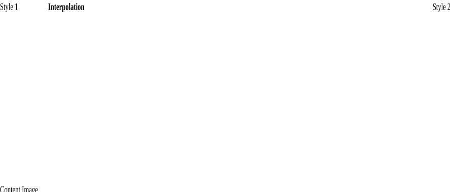
在某种程度上，使用FiLM参数在任务之间进行插值的概念甚至可以应用于视觉问答设置。使用在Perez等人[[perez2018film]]中训练的模型，我们在两对CLEVR问题之间对模型的FiLM参数进行了插值。在这里我们可视化了负责全局最大池化特征（这些特征被送入视觉流水线的输出分类器）的输入位置：
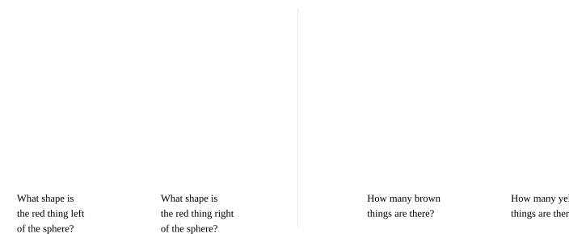
网络似乎在根据任务描述柔和地切换它正在图像中查看的位置。令人相当有趣的是，这些具有语义意义的插值行为竟然浮现出来，因为网络并没有被训练成这样行事。
尽管在不同问题设置中存在这些相似性，我们也观察到FiLM参数作为任务描述函数聚类方式的定性差异。与风格迁移模型不同，视觉推理模型有时会为给定的特征图表现出多个FiLM参数子聚类。
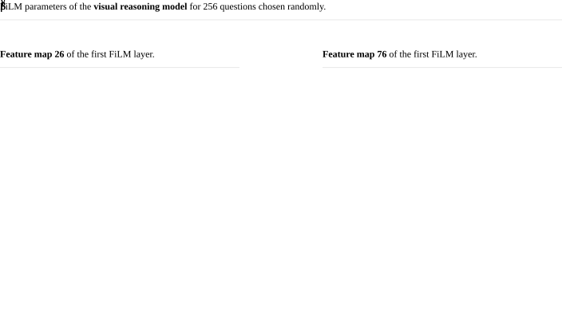
至少，这可能表明FiLM学会以特定于问题的方式运作，并且我们不应期望找到一个统一的、独立于问题的解释来说明FiLM在调制被FiLM-ed网络方面的成功。也许视觉推理的组合性或离散性质要求模型实现几个定义明确的操作模式，而这些对于风格迁移来说并不那么必要。
关注表现出子聚类的单个特征图，我们可以尝试通过按问题类型对散点图进行颜色编码来推断问题是如何重新分组的。
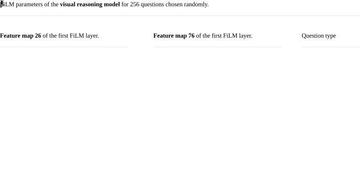
有时会出现清晰的模式，如右图所示，其中与颜色相关的问题集中在右上方的聚类中——我们观察到问题要么是Query color或Equal color类型，要么包含与颜色相关的概念。有时则很难得出结论，如左图所示，其中问题类型分散在三个聚类中。
在仅凭问题类型无法解释FiLM参数聚类的情况下，我们可以转向条件化内容本身来理解其中的机制。让我们来看另外两个图：一个针对前面图中的特征图26，另一个针对另一个也表现出多个子聚类的不同特征图。这次我们根据其关联问题中出现的单词来重新分组点。
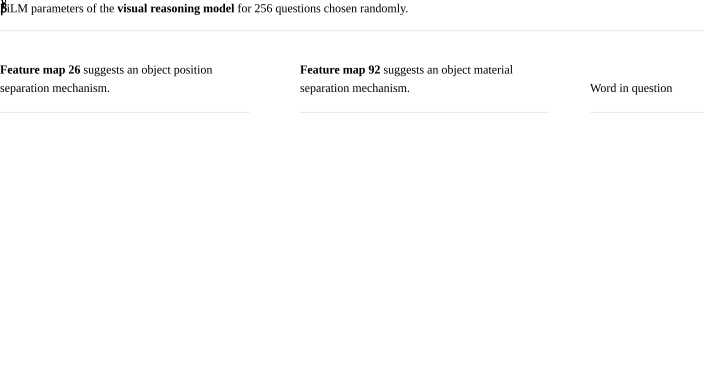
在左图中，左侧子聚类对应于涉及位于其他物体前方的物体的问题，而右侧子聚类对应于涉及位于其他物体后方的物体的问题。在右图中，我们看到一些基于物体材质的分离证据：左侧子聚类对应于涉及哑光和橡胶物体的问题，而右侧子聚类包含关于闪亮或金属物体的问题。
视觉推理模型中子聚类的存在也表明问题插值可能并不总是可靠地工作，但这些子聚类并不妨碍对问题表示进行算术运算，正如Perez等人[[perez2018film]]所报告的那样。
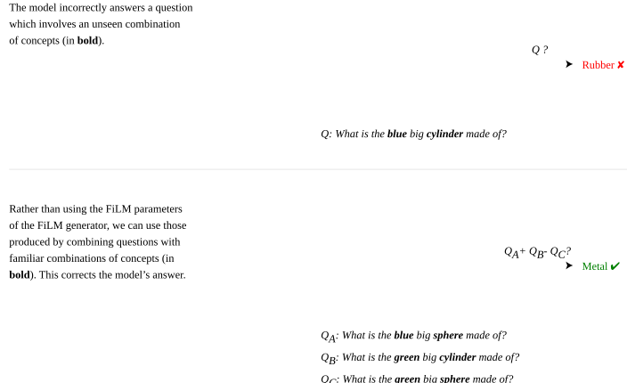
Perez等人[[perez2018film]]报告说，这种任务类比并不总是能成功纠正模型的答案，但它确实指向了关于FiLM-ed网络的一个有趣事实：有时模型出错并不是因为它无法计算正确的输出，而是因为它未能为给定的任务描述生成正确的FiLM参数。反之亦然：如果模型训练的任务集不够丰富，那么被FiLM-ed网络学到的计算原语可能不足以确保良好的泛化。例如，如果训练的风格中没有条纹，那么风格迁移模型可能缺乏产生类似斑马图案的能力。这可以解释为什么Ghiasi等人[[ghiasi2017exploring]]报告说，如果他们的风格迁移模型在训练时使用的风格数量不够多，那么它为新风格生成仿作的能力就会下降。请注意，在那种情况下，FiLM生成器的泛化失败也可能发挥作用，需要进一步分析才能得出明确的结论。
这指出了被FiLM-ed网络学到的各种计算原语与FiLM生成器学到的“数值配方”之间的分离：模型的泛化能力既取决于它解析新形式任务描述的能力，也取决于它是否已经学会解决这些任务所需的计算原语。我们注意到，这种多方面的泛化概念直接继承自FiLM框架所采用的多任务观点。
现在让我们将注意力转回迄今为止观察到的FiLM参数的整体结构性质。这种结构的存在已经被Ghiasi等人[[ghiasi2017exploring]]以及Perez等人[[perez2018film]]或多或少间接地探索过，他们对FiLM参数值应用了t-SNE[[maaten2008visualizing]]。
FiLM参数在许多任务描述上的t-SNE投影。

左边的投影受到了Perez等人[[perez2018film]]为其在CLEVR上训练的视觉推理模型所做类似投影的启发，显示了问题如何按问题类型分组。右边的投影受到了Ghiasi等人[[ghiasi2017exploring]]为其风格迁移网络所做类似投影的启发。该投影并没有像左边的投影那样将艺术家整齐地聚类，但这是可以预期的，因为一位艺术家的风格可能会随着时间发生巨大变化。然而，我们仍然可以在投影中检测到有趣的模式：注意图中圈出的孤立聚类，其中Ivan Shishkin和Rembrandt的画作被聚合在一起。虽然这两位画家表现出相当不同的风格，但该聚类是他们素描作品的组合。
总而言之，神经网络学会使用FiLM层的方式似乎因问题而异、因输入而异，甚至因特征而异；网络使用FiLM来条件化计算似乎并不存在单一的机制。这种灵活性或许可以解释为什么与FiLM相关的方法在如此广泛的领域中都取得了成功。
讨论
展望未来，仍有许多未解答的问题。这些关于基于FiLM的架构的实验观察是否可以推广到其他相关的条件化机制，例如条件偏置、sigmoid门控、HyperNetworks和双线性变换？特征级变换何时优于具有更强归纳偏置的方法，反之亦然？最近的工作将特征级变换与更强的归纳偏置方法相结合[[strub2018visual,bahdanau2018learning,yang2018dataset]]，这可能是一个最佳的中间地带。此外，FiLM的任务表示性质在多大程度上是FiLM固有的，又在多大程度上是从神经网络的其他特性（即非线性、FiLM生成器深度等）中浮现出来的？如果你有兴趣探索这些或其他关于FiLM的问题，我们推荐查看我们在此实验中用作起点的FiLM模型代码库：用于visual reasoning[[perez2018film]]和style transfer[[ghiasi2017exploring]]。
最后，仅在特征层面上的变化就能够复合成对被FiLM-ed网络的大规模且有意义的调制，这一事实仍令我们感到非常惊讶，希望未来的工作能够揭示更深刻的解释。不过目前，这是一个让人联想到更大谜题的问题，即神经网络总体上是如何将矩阵乘法和逐元素非线性等简单操作复合成具有语义意义的变换的。